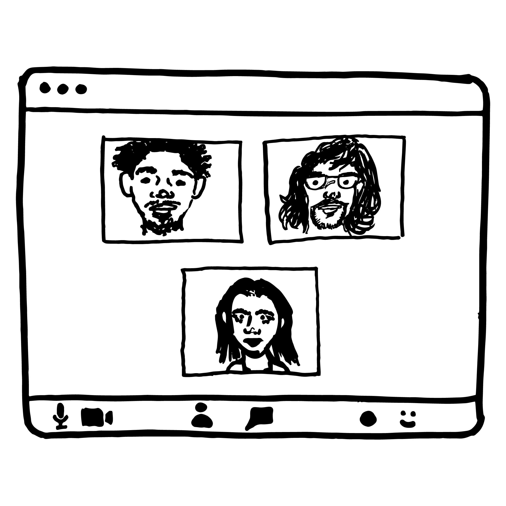

things i found interesting:
“in the last decade, technology has transformed from a tool that we use to a place where we live”
-just how much of our socialization happens in a digital space rather than face to face (especially during this pandemic)?

“if technology is a place where we live, a place that we carry around with us, shouldn’t we choose to be in lively and nourishing digital environments? This reasoning should be enough to encourage you to leave the optional digital places that you don’t enjoy”
-I think all the time about leaving certain spaces, or how little I use them, yet they have become somewhat of a social norm. For instance, I hate snapchat in its entirety, yet that account is what 80% of college students will ask for when meeting them for the first time
“the web is a marketplace and a commonwealth, so we have both commerce and culture; it’s just that the non-commercial bits of the web get more difficult to see in comparison to the outsized presence of the commercial web and all that caters to it”
-occasionally I have thoughts about what a platform would be like where this sense of creation and community exists. A place where the sole purpose of its function is to put things out there for people to see; to simply be
-the closest we have come to a space like that is probably the early stages of platforms that already exist, like YouTube or Tumblr. I miss the days when not everyone was an “influencer”; it seems everyone just wants to sell you something
“If commercial networks on the web measure success by reach and profit, cultural endeavors need to see their successes in terms of resonance and significance. This is the new game, one that elevates both the people who make the work and those who see, use, and enjoy it”
-the only way good, cultural “rooms” will begin to exist is if we collectively persuade each other to start caring about things that actually matter and create platforms run by people who aren’t concerned about how much money they’ll make